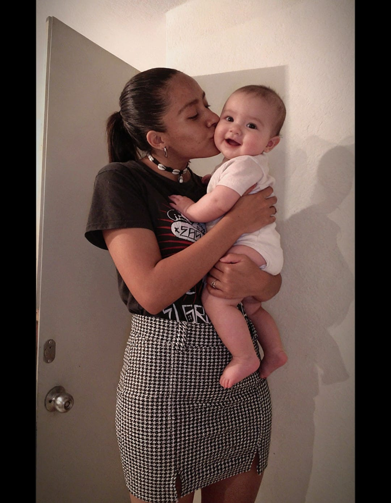

Tras once meses de investigación, el tribunal ha decidido abrir un expediente especial.
Antes de continuar, el tribunal requiere la identificación oficial de la acusada.
La acusada ha sido citada oficialmente ante el Tribunal.
Después de once meses de observación, análisis de evidencias, testimonios y acontecimientos...
El tribunal considera que existen motivos suficientes para presentar formalmente los cargos.
La investigación demostró un incremento anormal de felicidad en la víctima.
Se detectó una ocupación excesiva y permanente de los pensamientos diarios.
Después de una exhaustiva investigación, el corazón del demandante ha sido reportado como desaparecido.
La principal sospechosa es:
La Acusada ❤️
La acusada generó una cantidad excesiva de recuerdos imborrables.
Las pruebas muestran que la acusada provocó sonrisas constantes sin autorización judicial.
Los informes revelan que la víctima presenta síntomas avanzados.
Antes era solamente una palabra.
Ahora tiene nombre.
La Acusada ❤️
Después de prestar juramento ante este honorable tribunal, declaro que la acusada ocupa cada rincón de mi existencia.
No existe un solo día en el que deje de pensar en ella.
He revisado cuidadosamente todos los planes, objetivos y sueños.
En cada uno de ellos aparece la misma persona.
La Acusada ❤️
He revisado los archivos correspondientes a los últimos once meses.
La acusada aparece en todos los momentos más felices registrados en este expediente.
El tribunal ha autorizado la presentación de las pruebas fotográficas recopiladas durante la investigación.

El jurado ha escuchado todos los testimonios.
También ha revisado cada evidencia presentada.
La decisión está siendo procesada oficialmente.
La siguiente línea temporal resume los acontecimientos más importantes del caso.
Inicio de la investigación ❤️
Primeras sonrisas registradas ❤️
Incremento de felicidad ❤️
Primeras pruebas contundentes ❤️
Aparición de sentimientos ❤️
Corazón oficialmente comprometido ❤️
Incremento de recuerdos ❤️
Dependencia emocional detectada ❤️
Evidencias irrefutables ❤️
Caso listo para juicio ❤️
Sentencia inminente ❤️
Después de escuchar todos los testimonios...
Después de revisar todas las evidencias...
Después de once meses de investigación continua...
El Tribunal Supremo del Amor ha alcanzado una decisión definitiva e irreversible.
De todos los cargos presentados.
Sin derecho a apelación.
La sentencia será ejecutada de manera inmediata.
Después de evaluar las pruebas presentadas...
Después de escuchar las declaraciones oficiales...
Después de analizar once meses de evidencias...
Registrando resolución judicial...
Hace once meses llegó a mi vida una persona que cambió mi mundo por completo.
Lo que comenzó como una historia más terminó convirtiéndose en una de las experiencias más bonitas de mi vida.
Con el paso de los días descubrí una persona increíble, llena de cualidades que admiro profundamente.
Descubrí una sonrisa capaz de iluminar cualquier momento.
Una mirada capaz de transmitir tranquilidad.
Y un corazón capaz de hacerme sentir afortunado todos los días.
Gracias por cada instante compartido.
Gracias por cada conversación.
Gracias por cada recuerdo.
Gracias por cada sonrisa.
Durante estos once meses aprendí que el amor no se mide por el tiempo.
Se mide por la intensidad de los momentos vividos.
Por las emociones compartidas.
Y por la felicidad que una persona puede provocar en otra.
Tú lograste cambiar mi vida simplemente siendo tú.
Y por eso siempre tendrás un lugar especial dentro de mí.
Quiero seguir construyendo recuerdos contigo.
Quiero seguir viendo tu sonrisa.
Quiero seguir compartiendo momentos únicos.
Y quiero seguir enamorándome de ti cada día.
Porque cada día encuentro una nueva razón para admirarte.
Y cada día confirmo que eres una persona maravillosa.
Gracias por estos once meses.
Gracias por llegar a mi vida.
Gracias por quedarte.
Te amo más de lo que las palabras pueden expresar. ❤️ Feliz aniversario de once meses ❤️
Todas las pruebas fueron analizadas.
Todos los testimonios fueron escuchados.
Todos los hechos fueron comprobados.
El expediente queda listo para ser archivado oficialmente.
Tribunal Supremo del Amor
Expediente: 11M-2026
Acusada: Persona Sospechosa
Estado: Condenada ❤️
Delitos Comprobados:
La acusada deberá permanecer en el corazón del demandante durante toda la vida.
La presente resolución es definitiva e irrevocable.
No procederán apelaciones.
La condena entra en vigor de manera inmediata.
Juez Supremo del Amor ❤️
Acusada ❤️
La sentencia ha sido registrada oficialmente.
El expediente ha sido archivado.
La condena ha sido ejecutada correctamente.
Después de once meses de investigación...
Después de siete cargos comprobados...
Después de tres testigos y múltiples evidencias...
La acusada ha sido condenada a permanecer en mi corazón para siempre.
EL JUICIO DE MI CORAZÓN
⚖️ PRODUCCIÓN OFICIAL ⚖️
Idea Original
❤️ El Demandante ❤️
Acusada Principal
Persona Especial ❤️
Juez Supremo
❤️ Mi Corazón ❤️
Testigo #1
Mi Corazón ❤️
Testigo #2
Mi Futuro ❤️
Testigo #3
Mis Recuerdos ❤️
Evidencias Presentadas
7 Expedientes Oficiales
Tiempo de Investigación
11 Meses ❤️
330 Días
7,920 Horas
475,200 Minutos
Resultado Final
❤️ CADENA PERPETUA ❤️
Estado del Caso
CERRADO
Estado del Corazón
OCUPADO PERMANENTEMENTE ❤️
Sentencia Ejecutada
SIN POSIBILIDAD DE APELACIÓN
Gracias por estos
11 Maravillosos Meses ❤️
Y esto...
Apenas Es El Comienzo ❤️